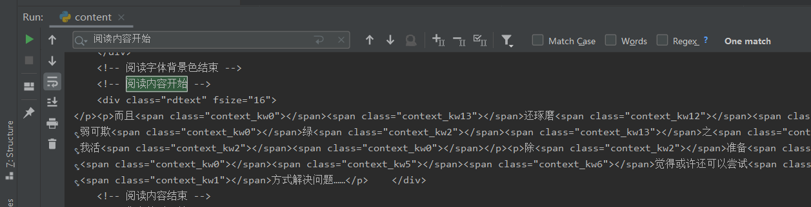
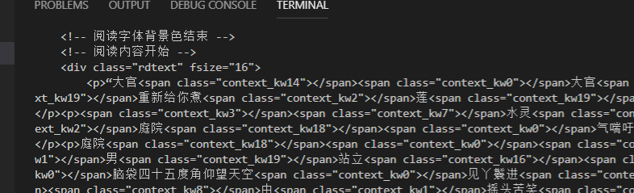
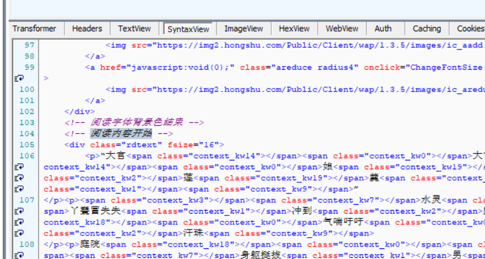

2019-08-20 07:45:07
python爬虫是一直来大家都用的多的，我也是常常用到。
requests做请求方便的很，但是今天却遇到requests的bug。text内容不可信。
pycharm2019.2
import requests
from lxml import etree
url = 'https://g.hongshu.com/content/99269/15382723.html'
req = requests.get(url, verify=False)
print(req.text)pycharm执行结果：
vscode执行结果：

fiddler抓包结果：

事实证明，pycharm输出的结果不知怎的，被莫名其妙的删减了内容；
开始还一直以为是requests本身的问题呢，冤枉了python。
对比下发现居然是pycharm2019.2输出的问题。
虽然大家都在用pycharm，我也只能说这个bug也太low了。。。。。